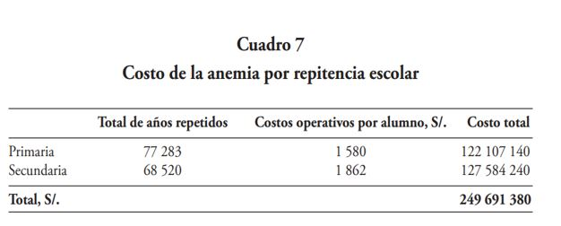
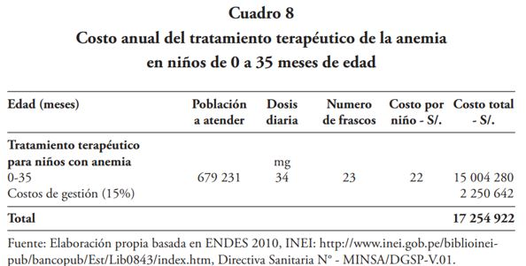
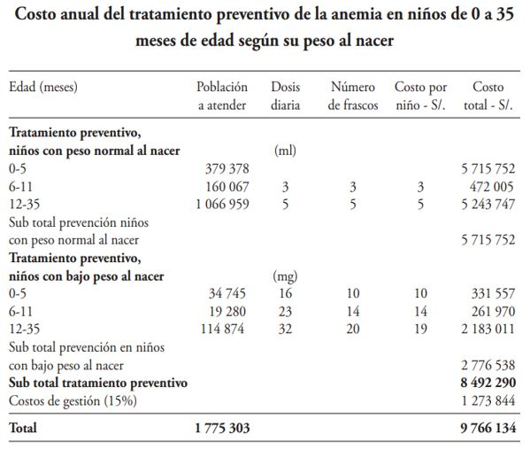
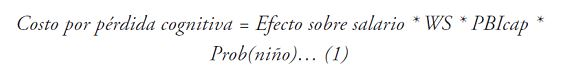
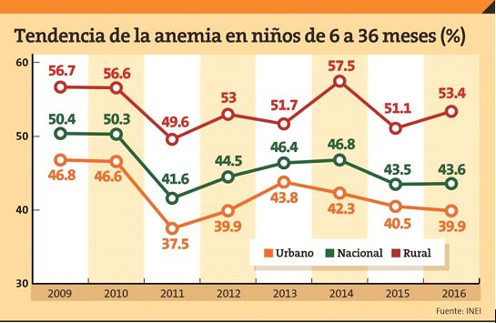

IMPACTO ECONÓMICO DE LA ANEMIA EN PERÚ EN NIÑOS MENORES DE 5 AÑOS Y DE SUS EFECTOS A LARGO PLAZO
En un estudio en Perú se describió que la anemia genera una pérdida del 0,62% del producto bruto interno (PBI) lo que representó el 40% del presupuesto del sector salud. Un ejemplo es el gasto que origina a largo plazo los niños que tienen anemia por la repitencia escolar.

.
El costo en niños de 0 a 35 meses de edad para el tratamiento terapéutico de la anemia en el Perú

.
Costo en niños de 0 a 35 meses del tratamiento preventivo de la anemia en el Perú

Conclusión
Hemos estimado los costos por perdida cognitiva y pérdida por escolaridad respecto al año 2017 para que luego sean comparados con los del año 2010.
A continuación, utilizaremos la fórmula de Ross y Horton para estimar la pérdida de dinero en dólares en lo que es la pérdida cognitiva.

Donde efecto sobre salario es un valor fijo estimado por Ross y Horton (4%), WS es la masa salarial representado en porcentaje de la producción total, PBIcap es el PBI per cápita y Prob(niño) es la medida como prevalencia de anemia en el Perú.
Tomando el porcentaje de masa salarial, según el INEI y BCRP es de 33.5%, el PBI per cápita del Perú, según World Bank National en el año 2017 es de 6572 US$ y la prevalencia en niños menores de 5 años en el Perú es de 43.6%
Haciendo los respectivos cálculos el costo por pérdida cognitiva en el año 2017 es de 38,4 US$ per cápita aprox. Ahora si lo multiplicamos por el número de habitantes que hubo en el 2017 es 1 200 milones de US$ aproximadamente.
Luego calculamos la pérdida de escolaridad mediante la siguiente fórmula:

Donde los años de escolaridad perdidos están fijados como 0.22 años, el retorno a la educación es medido por Yamada y Castro y establecen que representa el 5%, WS la masa salarial, PBIcap es PBI per cápita y Prob(niño) es la prevalencia de la anemia en niños menores de 5 años.
Realizando los cálculos con ayuda de los datos mencionados anteriormente para hallar lo anterior sale 10.56 US$ per cápita, lo que equivale a 330 millones de dólares aprox. En el año 2017.
A pesar del tratamiento terapéutico y preventivo en los niños de 0 a 35 meses de edad y gran porcentaje del presupuesto del estado para tratar la anemia en niños menores de 5 años, no tiene un cambio positivo. Observando el cuadro siguiente, en los niños de 6 a 36 meses de edad.

IMPACTO SOCIAL
La pobreza extrema está relacionado con la anemia por la falta de productos y servicios que demandan las personas, entonces algunas de ellas tratan de buscar otras alternativas como por ejemplo el robo. Es por eso que la anemia afecta a los niños provocando poca atención a las clases del colegio y observar a largo plazo el aumento de delincuencia.
En el cuadro siguiente, se puede observar el numero de años repetidos a nivel primario y secundario.